Отдых
1:30
Готов
Добавить упражнение
Банк упражнений из программы. Добавление действует только в текущей тренировке.
Все упражнения из банка уже добавлены.
Только завершённые
История
Завершённых тренировок пока нет.
4 зала · 2 йоги · 1 отдых
Программа и техника
Пн — ноги А · Вт — спина А · Ср — йога · Чт — ноги Б · Пт — спина Б · Сб — йога · Вс — полный отдых.
Первые 1–2 недели подобрать веса с запасом 2–3 повтора. Затем сначала достигать верхней границы повторений, потом повышать вес. Для становой — шаг 2,5 кг только при уверенных тройках.
Если результаты падают две тренировки подряд или копится усталость: примерно вдвое сократить рабочие подходы и снизить вес на 10–15%.
Лечебные упражнения · AAOS
Кисти и запястья
Комплекс при синдроме запястного канала. Выполнение занятия можно записать отдельно от силового журнала. Инвентарь не нужен.
Перед началом согласуйте комплекс с врачом или физическим терапевтом. Выполняйте под его наблюдением. В AAOS указан курс 3–4 недели, если специалист не назначил иначе; после восстановления комплекс может использоваться для поддержания результата.
Значительной боли быть не должно. Если упражнения усиливают боль или онемение нарастает, прекратите выполнение и обратитесь к специалисту. Если за 3–4 недели боль не уменьшается, также обратитесь к нему.
Оригинал AAOS (PDF, английский) · пересмотрен в октябре 2018 года. Ниже — перевод инструкций и иллюстрации из оригинала © American Academy of Orthopaedic Surgeons, не индивидуальное назначение. Текст и рисунки доступны офлайн, для PDF нужен интернет.
Журнал занятий
Отмечайте занятие после выполнения комплекса. Можно записать несколько занятий в день.
Записей пока нет.
1. Растяжка с разгибанием запястья
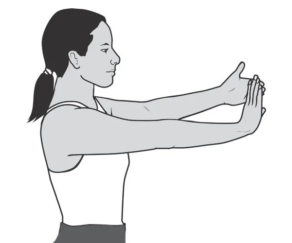
- Выпрямите руку и отогните кисть назад, как в жесте «стоп». Не блокируйте локоть в крайнем положении.
- Другой рукой мягко потяните ладонь к себе до ощущения растяжения на внутренней стороне предплечья.
- Удерживайте 15 секунд. Повторите 5 раз, затем смените руку.
Выполняйте в течение дня, особенно перед нагрузкой. После восстановления растяжку можно включать в разминку перед действиями с захватом предметов.
2. Растяжка со сгибанием запястья
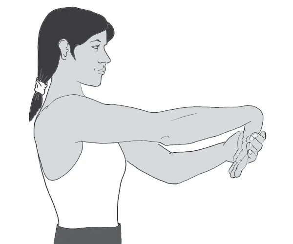
- Выпрямите руку ладонью вниз и согните запястье так, чтобы пальцы смотрели вниз. Не блокируйте локоть в крайнем положении.
- Другой рукой мягко потяните кисть к телу до ощущения растяжения на наружной стороне предплечья.
- Удерживайте 15 секунд. Повторите 5 раз, затем смените руку.
Выполняйте в течение дня, особенно перед нагрузкой. После восстановления растяжку можно включать в разминку перед действиями с захватом предметов.
3. Скольжение срединного нерва
Последовательно пройдите шесть положений, удерживая каждое 3–7 секунд:
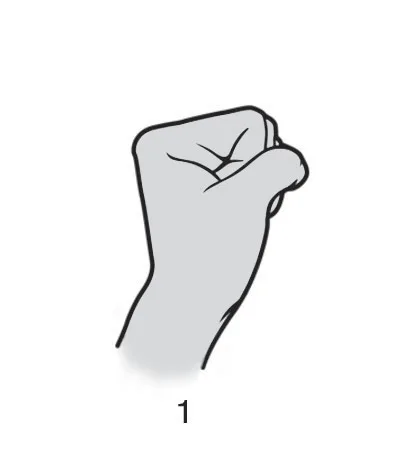
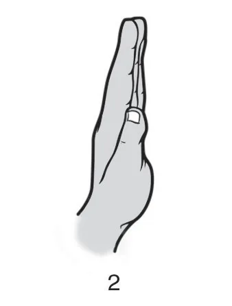
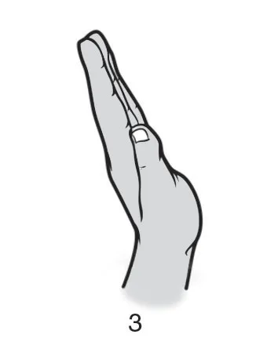
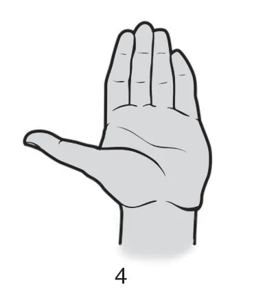
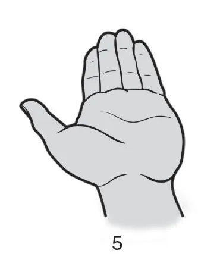
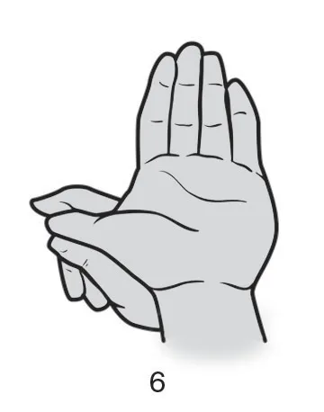
- Сожмите кулак, оставив большой палец снаружи остальных пальцев.
- Выпрямите пальцы, удерживая большой палец у боковой поверхности кисти.
- Сохраняя пальцы прямыми, разогните запястье — отогните кисть назад к предплечью.
- Сохраняя положение пальцев и запястья, отведите и выпрямите большой палец.
- Сохраняя пальцы, запястье и большой палец разогнутыми, поверните предплечье ладонью вверх.
- Другой рукой мягко потяните большой палец, не меняя положения остальных пальцев и запястья. Не давите сильно.
В PDF перед упражнением указано тепло на кисть 15 минут, после — пакет с дроблёным льдом или замороженным горошком на 20 минут. Возможность и безопасный способ применения тепла и холода согласуйте со специалистом, особенно при сниженной чувствительности; не прикладывайте лёд прямо к коже.
4. Скольжение сухожилий
В каждой серии переходите от положения 1 к 3, удерживая каждое 3 секунды. Запястье держите прямо.
Серия A
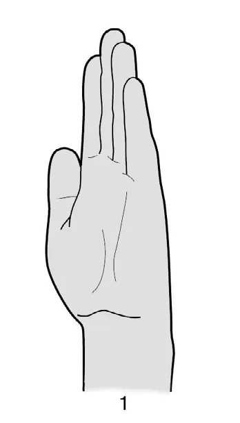
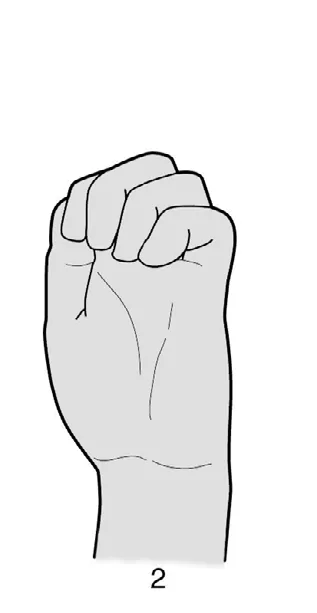
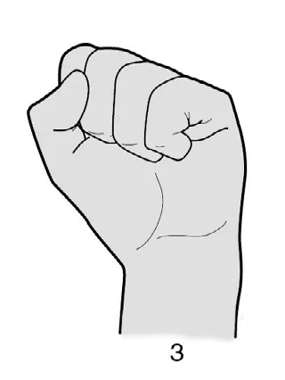
- Держите кисть перед собой, полностью выпрямите все пальцы.
- Согните пальцы «крючком»: средние и концевые суставы согнуты, суставы у основания пальцев остаются прямыми.
- Сожмите полный кулак, большой палец поверх остальных.
Серия B
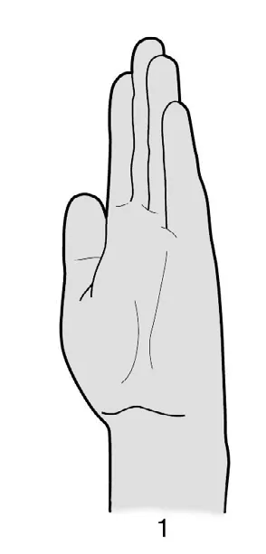
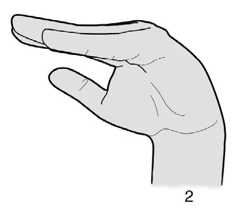
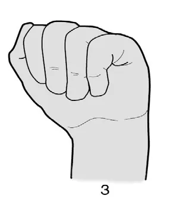
- Держите кисть перед собой, полностью выпрямите все пальцы.
- Сделайте «столик»: согните пальцы в суставах у основания, сохраняя сами пальцы прямыми.
- Согните пальцы в средних суставах, касаясь пальцами ладони.
Допустимо лёгкое натяжение, но не усиление боли. По мере облегчения выполнения можно увеличивать число повторов или занятий в день. Фиксированного числа дней в неделю в PDF нет — прогрессируйте по переносимости.
Для обеих серий в PDF указаны тепло на кисть 15 минут до упражнений и холод 20 минут после. Согласуйте их применение со специалистом, особенно при сниженной чувствительности; не прикладывайте лёд прямо к коже.
Восстановление · AAOS
Стопа и голеностоп
Комплекс для стопы и голеностопа после травмы или операции. Выполняйте под наблюдением врача или физического терапевта: согласуйте подходящие упражнения и нагрузку. В источнике указан курс 4–6 недель, если специалист не назначил иначе.
Перед упражнениями — 5–10 минут ходьбы или велотренажёра без высокой нагрузки. После разминки выполните растяжки 1–4, затем силовые упражнения 5–10 и в конце повторите растяжки. Не выполняйте движения через боль; при боли или сомнениях обратитесь к специалисту.
После восстановления комплекс можно продолжать для поддержания результата: AAOS указывает 3–5 дней в неделю. Частота отдельных упражнений ниже приведена из PDF и может отличаться.
Оригинал AAOS (PDF, английский). Ниже — перевод инструкций и иллюстрации из оригинала © American Academy of Orthopaedic Surgeons, не индивидуальное назначение. Текст и рисунки доступны офлайн, для PDF нужен интернет.
Журнал занятий
Отмечайте занятие после выполнения комплекса. Записи не смешиваются с тренировками кистей и силовым дневником.
Записей пока нет.
Растяжка · до и после силовой части
1. Растяжка икры у стены
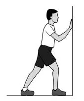
Растяжение ощущается в икре и пятке.
- Встаньте лицом к стене: здоровая нога впереди, немного согнута; нога, которую восстанавливаете, прямая позади, пятка на полу, носок слегка внутрь.
- Прижимая обе пятки к полу, подайте таз вперёд к стене.
- Удерживайте 30 секунд, затем расслабьтесь на 30 секунд. Повторите.
Не прогибайте спину.
2. Растяжка икры с согнутым коленом
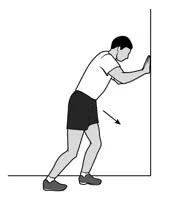
Растяжение ощущается в икре, по бокам лодыжки и в пятке.
- Встаньте лицом к стене: здоровая нога впереди, немного согнута; восстанавливаемая нога позади, колено согнуто, носок слегка внутрь.
- Прижимая обе пятки к полу, подайте таз вперёд к стене.
- Удерживайте 30 секунд, затем расслабьтесь на 30 секунд. Повторите.
Держите таз по центру между стопами.
3. Прокатывание мяча стопой
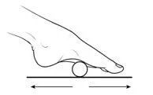
Воздействие ощущается вдоль подошвы стопы.
- Сядьте на устойчивый стул, обе стопы стоят на полу.
- Прокатывайте мяч под сводом восстанавливаемой стопы 2 минуты.
Сидите прямо, держите стопу ближе к стулу.
4. Растяжка с полотенцем
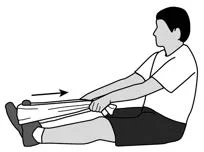
Растяжение ощущается в икре и пятке.
- Сядьте на пол, вытянув обе ноги перед собой. Упражнение также можно делать на стуле.
- Оберните полотенце вокруг передней части восстанавливаемой стопы, возьмите его концы руками.
- Держа ногу прямой, потяните полотенце к себе.
- Удерживайте 30 секунд, затем расслабьтесь на 30 секунд. Повторите.
Сидите прямо, ноги держите прямыми.
Укрепление
5. Подъёмы на носки на двух или одной ноге
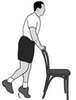
Нагрузка ощущается в икре.
- Встаньте, равномерно распределив вес между стопами. Держитесь за спинку стула или стену для равновесия.
- Для подъёма на двух ногах оставьте обе стопы на полу. Для подъёма на одной — поднимите здоровую ногу, перенеся вес на восстанавливаемую. Опорную ногу держите прямой.
- Поднимите обе пятки или пятку восстанавливаемой ноги как можно выше, затем опустите. Повторите.
Врач может предложить начать с двух ног и постепенно переносить больше веса на восстанавливаемую, прежде чем перейти к одной ноге.
6. Алфавит стопой
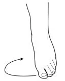
Движение ощущается в верхней части стопы и голеностопе.
- Сядьте так, чтобы стопы не касались пола.
- Большим пальцем стопы «напишите» в воздухе каждую букву алфавита.
Делайте небольшие движения только стопой и голеностопом.
7. Подбирание шариков пальцами стопы
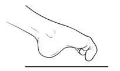
Работа ощущается в пальцах и верхней части стопы.
- Сядьте, поставив обе стопы на пол, разложите 20 шариков перед собой.
- Пальцами стопы поднимайте по одному шарику и кладите в миску, пока не соберёте все.
Не располагайте шарики слишком далеко впереди или сбоку.
8. Сбор полотенца пальцами стопы
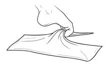
Работа ощущается в пальцах и верхней части стопы.
- Сядьте, поставив обе стопы на пол, положите небольшое полотенце перед собой.
- Захватите середину полотенца пальцами стопы и подтяните его к себе, затем расслабьте пальцы. Повторите.
Для усложнения можно положить груз на край полотенца.
9. Движение стопы на себя и от себя с лентой
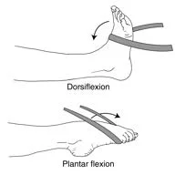
Нагрузка ощущается в икре, голени, за пяткой и на верхней части стопы.
- Сядьте на пол, вытянув ноги перед собой, либо сядьте на стул.
- Для движения стопы на себя закрепите ленту за ножку стула или стола, накиньте на стопу. Потяните пальцы к себе и медленно вернитесь в исходное положение. Повторите.
- Для движения стопы от себя оберните ленту вокруг неё и держите концы в руках. Мягко направьте пальцы от себя и медленно вернитесь в исходное положение. Повторите.
Держите ногу прямой, пятку — на полу для опоры.
10. Равновесие на одной ноге
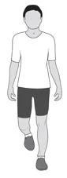
Наденьте удобную обувь, желательно для ходьбы.
- Встаньте рядом с устойчивой опорой, положите на неё обе руки, обе стопы на полу.
- Держа колени прямыми, поднимите одну стопу и стойте на восстанавливаемой ноге.
- Уберите руки с опоры, при необходимости возвращайте их, чтобы не потерять равновесие.
- Удерживайте равновесие до 30 секунд, время от времени опираясь руками по необходимости. Повторите.
Без обуви выполнять сложнее; этот вариант — только если безопасно по рекомендации специалиста.